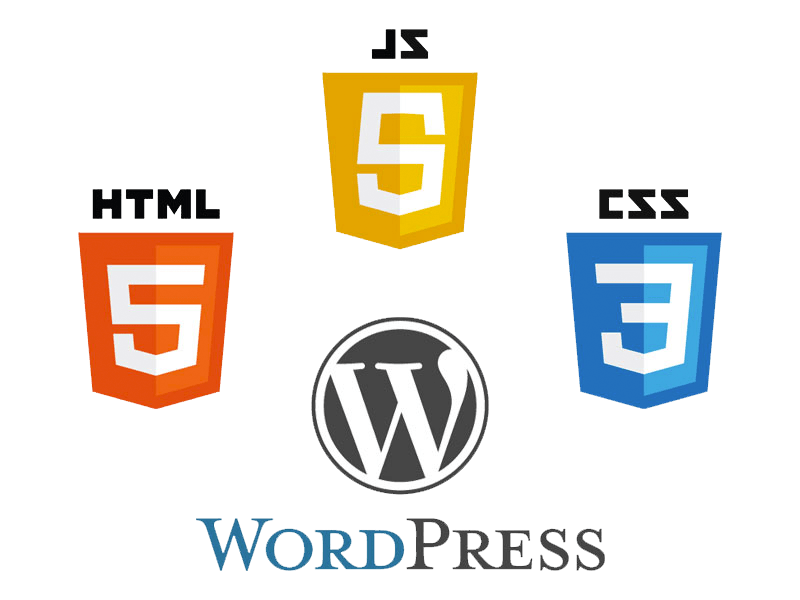

Affordable Website Design and high-Quality Copywriting Services
In today's fast-paced digital world, having a website that is both professional and enganing is crucial for the success of your business. A well-designed website can help you establish a strong online presence,attract new customers, and grow your brand. But finding the right website design and copywriting services that fit your budget can be a challenge. That's why we offer affordable website design services that are also backed by high-quality copywriting.
Our team of experts will work with you to create a website that not only looks great but also provides valuable and engaging content to your audience. Our copywriting will help you create a blog that is filled with relevant and interesting content that your users will enjoy reading. Having a blog with fresh and informative content can not only help you grow and maintain your audience, but it can also boost your search engine optimization (SEO) efforts.
By regularly publishing new content on your blog, you can create more social media posts and increase the chances of your content being shared. This leads to more social media shares, external links, and improved search engine rankings, helping your website get discovered by more people.
Promote yourself and your content by building trust & awareness.
By building trust and awareness through your blog, you can positin yourself as a creadible authority in your niche and attrack new customers. The best content marketing strategy will help you building a loyal audience that expects new updates from you and is more likely to recommend your business to others. When they are ready to make a purchase, they will think of you.
In conclusion, investing in affordable website desing and high-quality copywriting services can pay off in the long run. Our team of wxperts will help you create a website that is both profesional and onformative, providing valuable content that your audience will love. Whether you're looking to improve your online presence, attract new customers, or grow your brand, our services are designed to help you achieve your goals.